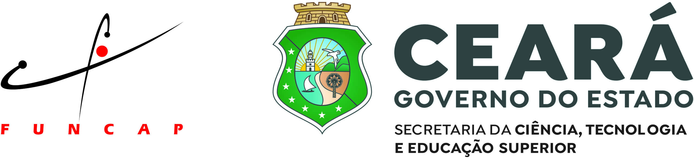

<style>
    /* Estilos exclusivos do rodapé */
    .main-footer {
        background-color: #1a1a2e;
        color: #f5f5f5;
        text-align: center;
        padding: 3rem 5%;
        margin-top: 4rem;
        border-top: 3px solid #e94560;
        font-family: 'Segoe UI', Tahoma, Geneva, Verdana, sans-serif;
    }
    .main-footer p {
        margin-bottom: 1rem;
        font-size: 1.05rem;
    }
    
    /* Layout para os logótipos - Nova estrutura em container e linhas */
    .footer-logos-container {
        background-color: #ffffff;
        padding: 2.5rem 2rem;
        border-radius: 8px;
        max-width: 850px;
        margin: 2rem auto;
        box-shadow: 0 4px 10px rgba(0,0,0,0.2);
        display: flex;
        flex-direction: column;
        gap: 3rem; /* Espaço entre a linha de cima e a linha de baixo */
    }
    
    .logos-row {
        display: flex;
        justify-content: center;
        align-items: flex-start;
        flex-wrap: wrap;
        gap: 6rem; /* Aumentado o espaço horizontal entre Realização e Organização */
    }

    .logo-group {
        display: flex;
        flex-direction: column;
        align-items: center;
        gap: 1.5rem;
    }
    
    .logo-group h4 {
        color: #1a1a2e;
        font-size: 1rem;
        text-transform: uppercase;
        letter-spacing: 1px;
        margin-bottom: 0;
        border-bottom: 2px solid #e94560;
        padding-bottom: 0.5rem;
    }
    
    .logo-items {
        display: flex;
        align-items: center;
        justify-content: center;
        gap: 2.5rem; /* Espaço entre as logos do IFCE e UFC */
    }
    
    /* Controle de tamanho das imagens */
    .logo-items img {
        max-height: 70px;
        width: auto;
        object-fit: contain;
        transition: transform 0.3s ease;
    }
    
    .logo-items img:hover {
        transform: scale(1.05);
    }

    .main-footer .contato {
        margin-top: 1.5rem;
        font-size: 0.9rem;
        color: #aaa;
    }
    .main-footer .contato a {
        color: #e94560;
        text-decoration: none;
        font-weight: bold;
    }
    .main-footer .contato a:hover {
        text-decoration: underline;
    }

    /* Ajuste para telas menores (celulares) */
    @media (max-width: 768px) {
        .logos-row {
            flex-direction: column;
            align-items: center;
            gap: 3rem;
        }
    }
</style>

<footer class="main-footer">
    <p>© 2026 XIV ERCEMAPI - As IAs Generativas: Redefinindo as Fronteiras entre a Computação e a Sociedade</p>
    
    <div class="footer-logos-container">
        <div class="logos-row">
            <div class="logo-group">
                <h4>Realização</h4>
                <div class="logo-items">
                    
                </div>
            </div>
            
            <div class="logo-group">
                <h4>Organização</h4>
                <div class="logo-items">
                    
                    
                </div>
            </div>
        </div>
        
        <div class="logos-row">
            <div class="logo-group">
                <h4>Apoio</h4>
                <div class="logo-items">
                    
                </div>
            </div>
        </div>
    </div>

    <p class="contato">Dúvidas ou Informações? <a href="mailto:ercemapi2026@gmail.com">ercemapi2026@gmail.com</a></p>
</footer>
